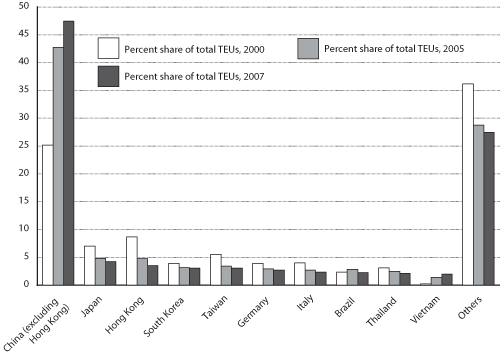

Excel | CSV | Table Version
(Percent)
NOTE: For the analysis in this report, U.S. merchandise trade with mainland China and Hong Kong are considered separately. As used here, China refers to mainland China.
SOURCE: U.S. Department of Transportation, Research and Innovative Technology Administration, Bureau of Transportation Statistics, based on data from U.S. Department of Transportation, Maritime Administration, as of April 20, 2009.